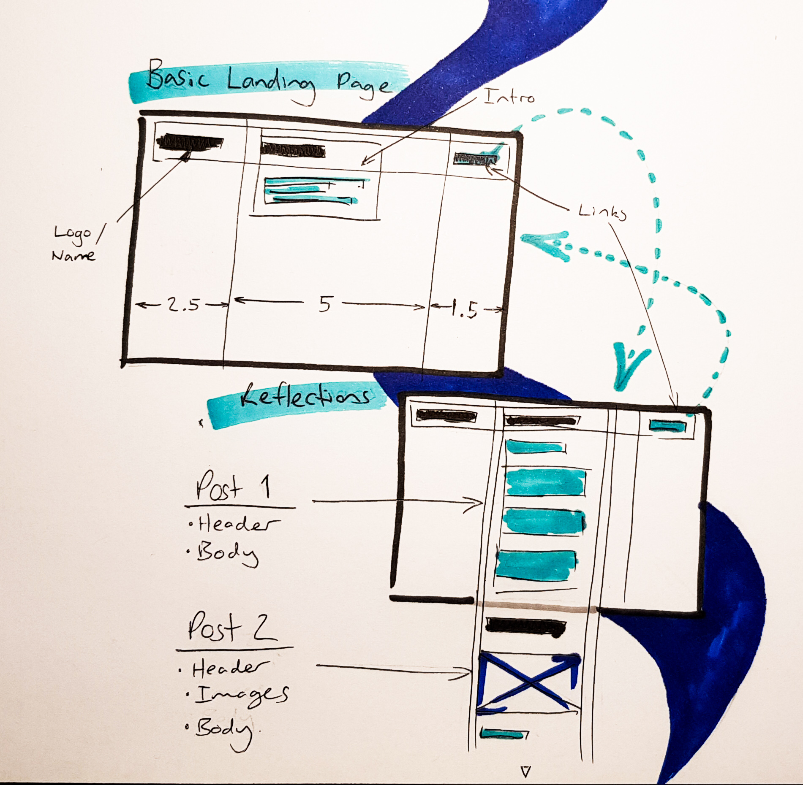

The Value of Git for Design
Git is the Developers time machine.
Built as a distributed version control system, Git creates snapshots of your entire code database, letting you create multiple variations of a base code, archiving them all for later reference, even once you have picked you favourite and launched the website. If a team is creating a prototype website redesign at short-notice, Git enables 3 key things; Consistency, Speed, Collaboration.
Consistency. Git creates a master chain of each snapshot of your code, as does any other software, where it differs is in its version control and branching capabilities. You can create pull requests to merge different older and newer versions of the software. If you are ripping your hair out over a bug ridden version you have been designing for 5 hours you can easily revert back to the successful previous master, without the fear of data loss.
Speed. Git allows rapid and lean development of prototypes and versions of a design. Multiple people can input on a single version simultaneously and then pull their progress together. Developers can incorporate client and customer feedback and bug reports in real time. Instead of delaying updates they can release bug fixes quickly with the security of reverting if need be. UX Designers can rapidly iterate multiple website layouts in real time, and A B test them from a central platform.
Collaboration. Teams can not work from one online database, and each version they make can safely co-exist on the platform without fear of bugs and crashes. Teams can take the best elements from multiple versions and blend them into a cohesive master, they can manage development, product design and marketing all from one place.
Git gives developers and design teams the freedom to work collaboratively, efficiently and without fear of file or version loss.
Blog Wireframe Development
My initial development sketches, exploring simple interactions and key information, from here I will try to improve code legability and website design.